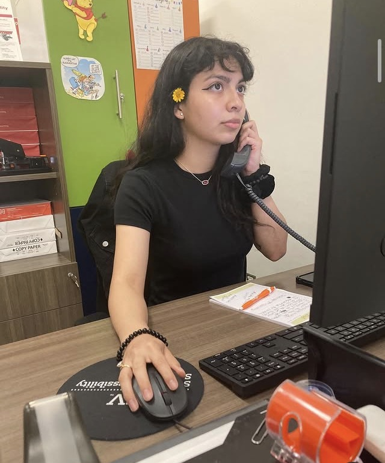

Stephanie Marie Dominguez
Early Childhood Education & Child Development
About Me
My name is Stephanie Marie Dominguez. I’m passionate about child development, early intervention, prevention-oriented support, and building environments where every child feels safe, seen, and supported.
What I Focus On
Early childhood development Social-emotional learning Inclusive classroom practices Early intervention & prevention Family & community engagementExperience That Shaped My Approach
🎓 UTRGV – Student Accessibility Services
Supported accessibility documentation, student communication, and inclusive support services.
Supported accessibility documentation, student communication, and inclusive support services.
📄 Texas Southmost College – Admissions & Records
Supported enrollment services, scheduling, and student records.
Supported enrollment services, scheduling, and student records.
🤝 St. Mary’s Catholic Church (Brownsville)
Office assistant and volunteer supporting organization, events, and community needs.
Office assistant and volunteer supporting organization, events, and community needs.
Support Organizations (RGV)
YouTube – Learning & Awareness
Contact
📧 Email: stephaniedominguez12314@gmail.com